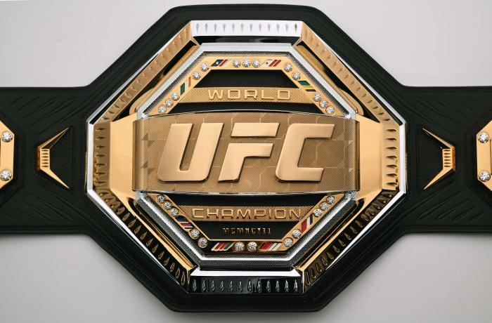

Home

De UFC is de grootste MMA organisatie ter wereld. Dit is tot stand gekomen in 1993 toen Art Davie wilde weten wie de beste vechter ter wereld was. Het allereerste UFC-gevecht vond plaats tussen de Nederlandse Gerard Gordeau en Teila Tuli uit Hawaii, Gordeau won dit gevecht nadat hij drie tanden uit de mond van de man uit Hawaii had geschopt. Deze gevechten werden echter te gewelddadig gevonden. In 2001 werd het bedrijf opgekocht door de gebroeders Fertitta. De regelgeving werd strikter waardoor de gevechten iets meer sociaal geaccepteerd werden. De UFC werd pas bekend toen in 2004 de Reality-show The Ultimate Fighter uitkwam. In deze Reality-show werden er 16 vechters verdeeld over 2 teams en 2 gewichtsklassen om vervolgens om een plek in de UFC te vechten. Deze vechters werden allemaal in dezelfde villa geplaatst wat zorgde voor een flink aantal opstootjes. Het bedrijf van de broers Fertitta genaamd Zuffa besloot een aantal rivaliserende MMA-organisaties op te kopen zoals WEC, Strikeforce en Pride om de competitie te elimineren. Dit heeft er voor gezorgd dat de UFC nu al jaren op nummer 1 staat binnen de MMA-wereld, maar ze zijn zeker niet de enige, zo zijn er ook andere grote organisaties zoals Bellator en Cage Warriors. MMA is een van de snelst groeiende sporten ter wereld. Nu is boksen nog de meest gekeken vechtsport op de wereld maar er wordt verwacht dat MMA binnenkort de koploper wordt in de vechtsportwereld. MMA bestaat uit twee aspecten; staand vechten en op de grond vechten. De vechtsporten die hier het meest voor gebruikt worden zijn worstelen, boksen, braziliaans jiu jitsu en muay thai.
